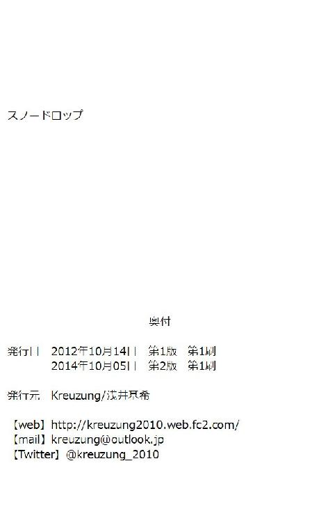

| スノードロップ (Kreuzung) | |
| 浅井基希 | |
| 浅井基希 (2017) | |
スノードロップ
魔物が人々の生活を脅かす世界――
人に近い知能を持つとされるがその姿は異形――凶暴性も高く、幾度となく人を襲い文明を破壊する。
人々は古くから魔物の存在に苦しめられていた。
ルヴィック帝国領の最北、深い山間部に位置するリスフォール。
この町は三十年ほど前から開拓が始まった新しい土地だ。近くの鉱山からは良質の金属が豊富に発見され、その取引から生まれる豊富な資金を元に発展を続け、帝国一の活気を見せている。言うまでもなく今日における帝国の隆盛にも大きく貢献していた。しかしながらリスフォールの町周辺はまだ完全に開拓されておらず、魔物が多く出没する魔の地帯も残されている。
八年前には突如群れを成した魔物が町を襲撃して、多数の犠牲者を出した。予想を遙かに超えた数の魔物に、組織されていた自警団ではほとんど歯が立たなかった。帝国からの援軍がもう少しでも遅れていれば、リスフォールという町そのものが壊滅していたかもしれないほどの惨状だった。
リスフォールの悪夢と呼ばれるその悲劇は、より強力な自警団の設置と、常駐する帝国騎士団を増員させるきっかけとなった。現在ではその中での精鋭たちによる討伐隊を組織して、積極的に魔の地帯へと魔物の討伐作戦を進めこの町を守っている。
リスフォールは冬になると雪深くなり陸の孤島になる。馬車が頼りとされている陸路での交通網も絶たれてしまい、住人たちは不便な生活を送ることになるが、同時に魔物も寒さのために息を潜める。リスフォールの住人にとって、魔物の襲撃がないという安心感はその不便を補って余りあるものだった。
今年も雪が深く降り積もり、人々は穏やかな日々を送っていた。
【１】
リスフォールの中心部にあたるルシウム地区、自警団の室内訓練場で二人の人物が剣の手合わせをしている。
一人が一方的に攻撃を仕掛け、もう一人がそれを身軽にかわし、時折手にしている剣で相手の攻撃を軽く受け流すといった形だ。
攻撃を仕掛けているのは、まだ幼さの残る顔立ちの少女、ティーク。今年の春、正式に採用されたばかりの新人自警団員だった。
余裕の表情で攻撃を受け流している女性は、帝国騎士団第五分隊の中隊長ソフィア。自警団の管理や魔物の討伐隊の指揮を執ることもある彼女は、戦いの精鋭揃いの騎士団の中でも一際有能な人物だった。
任されている立場からも実力の差は明らかなのだが、ティークはひるむことなく様々な攻撃方法でソフィアに向かっていく。
右上から斬りかかるように見せかけておいて直前で剣を反転、柄で相手の武器を持つ手をたたき落とそうと試みたり、足下を狙った薙ぎ払いから身体を半回転させて突きに変化――しかしソフィアは余裕でかわし続ける。
二人が使っているのは訓練用の木剣だった。訓練用といえどもそれなりに重さもある立派な武器だ。
ティークは自警団用の革鎧、ソフィアは薄い金属で作られた訓練用の鎧を身につけてはいるが、それでもまともに攻撃を受ければ怪我は免れない。緊張すべき場面なのだがソフィアにはその様子は見られない。攻撃を避けるのも舞うような身のこなしだった。
室内訓練場にはその他にも二人を遠巻きに眺めて好き勝手に声援を飛ばしている観衆がいた。数分前に手合わせを始めた時から二人の勝敗は賭けの対象になっていた。必然的に賭けている相手への声援も大きくなる。
当人たちは単なる訓練目的で手合わせをしているだけなのだが、見物人が勝手に賭け事を始める。娯楽の少ないリスフォールでは日常的に見られる光景だった。賭けるものは金銭ではなく『今晩の酒を一杯』などの他愛のないものだ。
今日の賭け主はティークと同じく訓練に来ていた自警団員と、賑やかな気配を感じ取った近所の住人たちだった。騎士たちは品位が求められているので大っぴらに賭け事には参加して来ない。騎士団の中で積極的に参加するのはリスフォールに馴染んだ駐在歴の長いベテランくらいである。
「ティーク！ 中隊長に勝てたら晩飯おごってやるぞ！」
観衆の中から劣勢のティークに声援が飛ぶ。
「――だと。どうする？」
ソフィアは勝ちを譲っても構わないといった趣旨の言葉を発した。ティークを試しているようにも思える。
「......手を抜かれるのは嫌です！」
ティークの負けず嫌いな気性に火が付いた。
「それでこそティークだ」
ソフィアは嬉しそうに微笑んでいた。
至近距離で攻撃を続けていたティークが間合いを探すようにソフィアから離れた。長時間の手合わせで疲労も大きいティークには振り乱れた短い金髪を整える余裕もない。一方のソフィアは落ち着き払った余裕の表情のままだ。後頭部で緩く結んでいる長い黒髪も全く乱れていなかった。ソフィアも間合いを計ってはいるが、その動きは何処か優雅ささえ感じてしまうほどだ。この実力の差は一体何なのだろう――ティークは軽い苛立ちさえ覚えていた。
ティークは剣を構え、ソフィアを見据えた。
ソフィアはリスフォールの悪夢の際に帝国から派遣され、他の騎士たちと共に町を守った人物だ。端正な顔立ちと少ない口数のせいで冷淡そうな印象を与えるが、実際は飾らない率直な人柄でその功績に違わず人望も厚い。「娯楽が少ない」と都会出身の他の騎士たちが不満を口にする中で「そこが気に入った」という理由で、年に一度の定期的な報告以外では帝国に帰ることもなく、リスフォールに駐在している。数少ない女性の騎士で、更にリスフォールでは珍しい黒髪の持ち主だが、それもまたソフィアを表す一つの特徴になっていた。そして、両親を魔物に殺され絶望の中にあったティークに、剣という希望を教えてくれた存在でもあった。
ティークは悔しさと尊敬の入り交じった眼差しでソフィアを睨んで大きく息を吸い込んだ。
「やああ！」
ティークが気合いの叫びと共に、ソフィアに向けて素早い一歩を踏み込んだ。
「――おっと！」
予想以上の早さで間合いを詰めた一撃がソフィアの髪をかすめた。今までの攻勢を余裕でかわしていたソフィアが一瞬だけ慌てた表情を見せた。
ティークが「やった！」と思った瞬間、小さな隙ができた。その隙を見逃すほどソフィアは甘くない。
ソフィアは今まで受け流すだけだった剣で、ティークの剣を握っている手元を鋭く狙う。ティークは慌てて柄でその剣を受け止める。
なんとか受け止めたのも束の間、ソフィアの追撃がティークを襲う。ティークはそれを寸前でかわし続ける。それはソフィアのように優雅なかわし方ではなく、地面を転がって逃げるといったほうが適切なものだった。
ソフィアの剣がティークの真正面へ打ち下ろされる。ティークはそれを剣で受け止めた。しかし――
「うわっ！」
ティークの持っていた剣が弾き飛ばされ、バランスを崩したティークが床に転がった。力負けだ。
「勝負あり！ ソフィア中隊長の勝ちだ！」
観衆の誰かが声を上げた。見ていた誰からも異論は出ない。誰の目から見てもティークの負けだった。
「すまない、大丈夫か？」
ソフィアは床に突っ伏した形になったティークに手を差し伸べる。
「さっきの一撃は良い動きをしていた。だがその後の隙が大きい」
ソフィアは優しくティークの手を取り、立ち上がらせた。
「あと少しだったのに......」
ティークは髪を掻き乱して悔しさを表す。乱れていた髪が更に大きく乱れる。
渾身の一撃だったにもかかわらず、ソフィアは一瞬怯んだというだけだった。
「もう一度お願いします！」
ティークは弾き飛ばされた訓練用の剣を拾い構えなおした。途端、左の手のひらに痛みが走る。どうやら転んだときに擦りむいたようだ。しかしティークはその痛みを押し込めて、ただまっすぐにソフィアを見る。
何かと忙しいソフィアの時間がこうして空くことは少ない。普段から強くなりたいと願っているティークにとって、帝国の騎士から直々に稽古をしてもらえる機会を逃すわけにはいかない。観衆の間からは「いい根性だ！」と声が上がっている。
「今日はもう終わりだ、幼馴染み殿が迎えに来ているぞ」
ソフィアはティークが構えていた剣を押しとどめて取り上げると視線を訓練場の入り口へと移す。ソフィアの視線の先を辿ると、屈強な自警団員や町人に紛れてティークの幼馴染みのアルナが不機嫌そうに腕を組んで立っていた。
ティークとアルナの二人は共にリスフォールの悪夢で親を失い、孤児となった。二人とも同じ孤児院で暮らしていたが、アルナは三年前に里親に引き取られた。アルナの里親のビリアン夫妻は、孤児院でアルナと仲の良かったティークも一緒に養子にしたいと申し出てくれたのだが、ティークはそれを断った。里親に不満があるのではなく、ティークにとっては自警団に入って独り立ちする事が目標だったからだ。
ティークは昨年自警団に正式採用となった。給金が支給されるようになり、孤児院からも独立して今は一人で暮らしている。それぞれ違う環境に身を置くことにはなったが、アルナとは親を亡くしてから一番辛かった時に互いを支え合っていた、今でもかけがえのない存在同士だった。
ティークはソフィアに言われるまでアルナが居ることに全く気付かなかった。ティークが必死になっていたあの手合わせの間でも、ソフィアはこの野次馬の中にアルナがいることを認識できていた。ソフィアにはそれだけの余裕があった。ティークは悔しさを押し隠すように自分の手を強く握りしめた。さっきの怪我がより痛く感じられた。
「アルナ、どうしたの？」
ティークは左手の痛みを隠してアルナに話しかける。さっきまで賭けで盛り上がっていた観衆は早々と解散して、賭けに勝った者は喜び、負けた者は落ち込んだりしながら訓練場を後にしていた。
「どうしたのって、今日はティークの誕生日でしょ。お祝いするから夕暮れまでには家に来てねって約束してたじゃない」
アルナは少し遠慮しがちに人の少なくなった訓練場に入ってくるとティークに詰め寄った。その言葉でティークが訓練場の窓から外を見るともう夕暮れ時をすぎてすっかり夜になっていた。
リスフォールの建物は冬の積雪に耐えるために窓が小さく作られている。加えて室内では暖をとる目的もあり、暖炉や洋燈の明かりが灯り続けている。そのために、気がついた時には日が暮れていることも多い。
「あれ？ もうそんな時間？」
あっけらかんと返事をするティークに呆れたアルナはため息をついた。
「そうだったのか、遅くまでつき合わせて悪い事をした」
ソフィアが稽古に使っていた剣を片付けながら申し訳なさそうに詫びた。つき合わせていたのはティークのほうなのだが、ティークに非を被せないように謝る辺りがソフィアの人柄を表していた。
「何か贈り物を考えないといけないな」
「そんな、稽古してもらえるだけで十分です」
ティークは慌てて頭を振った。何かと忙しい立場のソフィアがこうして自分の為に時間を使ってくれることは他のなによりも嬉しいのだ。
「いや、自警団でも良く働いてもらっているからな」
ティークは自警団の本来の仕事である町の犯罪取り締まりなどでもよく活躍している。ソフィアもその辺りを高く評価しているようだ。
「何歳になったんだ？」
「十七歳です」
「......もうそんな歳か」
ソフィアは顎に親指を当て考え込む。何か考え事がある時に良くやるソフィアの癖だ。
「どうかしました？」
「いや、月日が経つのは早いと思ってな。今夜はゆっくり楽しむといい」
ソフィアは懐かしむように微笑んでから、ティークを送り出した。
【２】
ティークはアルナの家がある河川地区に向かうために、雪道を二人で歩いていた。毎日のように降っていた雪も数日おきになり、量も少なくなってきている。厳しい寒さも少し和らぎ、春を告げる予兆だとされる流星が時々夜空をかすめるようになっていた。
ティークの一番好きな夜空が見られる時期だ。よく歩きながら空を見上げているので、アルナに注意されるのもこの時期だ。雪道に足を滑らせることも稀にある。今夜のティークは転ばないよう、アルナに注意されないよう、あまり夜空を見ずに歩いていた。
「自分の誕生日忘れるとか信じられない」
アルナは怒り半分、呆れ半分といった口調だ。
「忘れてた訳じゃないよ。訓練に夢中になってただけ」
忘れてはいないと言い訳をしているが、それでもティークは気まずそうに笑う。
「そんなに訓練が大事なの？」
「強くなりたいもん。大事だよ」
「だけど、さっきだって怪我したでしょ？ 手見せて」
アルナはそういうとティークの左手をコートのポケットから引きずり出そうとする。
「な、なんでわかったの？」
最初は拒んでいたティークだったが、数秒の抵抗のあと手を差し出した。
「剣を持ったときに痛そうな顔してたから。あとティークは怪我ばっかりしてるから」
アルナは肩にかけていた小さな鞄から、綺麗に畳んだ白い布と包帯を取り出した。
「準備してるんだ......」
「持ってないと不安なんだもん」
アルナは傷口を確認してからそっと布をあて、包帯をくるくると手慣れた様子で巻き始めた。包帯を止めるために端を二つに裂いて結び紐を作ってからしっかりと結びつけると「薬は帰ってからね」と付け加えて一応の手当を終えた。
「女の子なのに怪我ばっかり」
怒っているような、呆れているような口ぶりでアルナが言う。
「そんなの関係ないよ、ソフィアも女の人でしょ？」
ティークは巻いてもらった包帯を馴染ませるために手を軽く握ったり開いたりしている。痛みは先ほどよりマシになっていた。
「あの人はちゃんとした帝国の騎士様。ティークとは違うじゃない」
「私だって一応自警団員なんだけど」
「いくらお給料が出ても自警団は自警団。騎士とは違うわよ。さっきだって一方的だったし、それにソフィアさんが怪我したなんて聞いたことないもの」
確かにしっかりとした訓練を受けた騎士とは身のこなし方が全く違うことはティーク自身もわかっている。ソフィアが強いのもわかっている。その強いソフィアから直々に手ほどきを受けていても追い付けている実感がない。
「うーん、確かに。強くなってるはずなのに、なかなか追いつけないんだよね」
ソフィアから剣を勧められて八年になるが、未だにソフィアには及ばない。
しかし、自警団の中だと実力は上のほうだ。実際に自警団内の武術大会でティークは常に上位に入っている。討伐隊に選ばれている先輩と手合わせをして勝ったことだって何度もある。自警団の中では次の討伐隊には間違いなくティークも選ばれるだろうとの声も大きい。それなのにソフィアが相手だと今日のように歯が立たない。
「もっと強くなりたいんだけどな」
ティークは包帯が巻かれた左手を見つめて呟いた。
「......今だって普通の人と比べたら十分強いよ。どうしてそこまで強くなりたいの？」
ティークを見ていたアルナが何度目かになった疑問を口にする。ティークが怪我をするたびに訊いていることでもある。この前は自警団の任務で、酔っぱらい集団の大喧嘩を止めるために巻き添えを食らって殴られ、顔が腫れたときだった。
自警団員には装備としてそれぞれに武器が支給されているのでそれで対処すれば良かったのだが、その装備はあくまでも凶悪な犯罪者や魔物に対するもので一般人相手、特に酔っぱらいの喧嘩程度では武器を振るってはならないという決まりがある。
自警団では武器を使わない格闘術なども習ってはいるのだが、酔っぱらった大男の――それも鉱山で働いている屈強な――集団の喧嘩を止めるにはティークでは少々力が足りなかった。結果殴られて怪我をしたのだ。幸いにも跡などは残らなかったが、アルナやソフィアにも随分心配をかけた。
それでも自警団を辞めることなく、もっと強くなりたいと言っているティークのことをアルナが疑問に思うのも無理はない。
「私は――」
ティークは夜空を見上げ、言いかけた言葉を飲み込んだ。
あえて言葉にするのなら、自分から家族を奪った魔物に対しての復讐なのだろう。
ティークの両親は、まだ幼かったティークの目の前で魔物に無残に殺された。
魔物の襲撃に混乱する町の中、逃げ惑っていた一家の前に立ち塞がったその魔物は赤く光った目をしていた。戦いは疎か日常の些細な諍いさえも嫌いだった父がせめてもの抵抗だと言わんばかりに木の棒を持ち、魔物に立ち向かおうとした。しかし、それは勝ち目のない戦いだった。魔物の爪は躊躇うことなく振り下ろされ、鮮血が散った。その魔物は、飛び散る血を楽しむかのように何度も父の身体を切り刻んだ。そして赤く光る目をティークの母に向け不気味な咆哮をあげた。母が発した「逃げなさい」という言葉に従ってティークは無我夢中で走り出した。そのすぐ後に母の悲鳴が聞こえたが、ティークは振り向くことができなかった。
ティークはあらゆる生き物の気配を避けて、泣きながら町の中を走り続けた。ティークが覚えているのはそこまでだ。
気が付いた時には援軍でやってきた帝国騎士団に保護されていた。
最後に聞こえた二人の声とその魔物の赤い目がティークの記憶から消えることはない。
自分の家族を殺した魔物がどうなったのかはわからない。討伐された中にいたのかもしれないし、逃走したのかもしれない。
出来ることなら自分のこの手で――
果てしない憎悪にもよく似たその思いは八年経った今でも消えることはない。そんな感情を口にすれば、アルナに嫌われてしまいそうで怖かった。
アルナは黙り込んだティークに答えを促さなかった。アルナもまた、何度訊いても答えないティークには慣れていた。
【３】
二人は河川地区の高台にあるアルナの家に着いた。この地区は八年前にも被害が比較的少なかった地区だ。その付加価値が考慮され土地の値段は高く、リスフォールの中でも裕福な人々が多く住む区域になっている。
アルナの里親のビリアン夫妻はリスフォールの悪夢の後、帝国から移住してきた裕福な商家の一族だ。リスフォールでも複数の商店を経営している。長年子供に恵まれず、孤児だったアルナを三年前に養子に迎えた。同時に誘われたティークは申し出を断っているが、ティ－クのことを養子に迎えたいという意志もまだ持っているようだ。
アルナの家は、辺りに立ち並ぶ家屋の中でも群を抜いて立派な佇まいをしている。あまりにも立派なので、豪華なものに慣れていないティークは門を通るときにはいつも気後れしてしまう。
「いらっしゃい、寒かったろう」
「あらまあ、こんなに冷えて」
アルナが玄関を開けた途端にビリアン夫妻が出迎えて、早く暖かい部屋にと案内される。養子の申し出を断っているにも関わらず、ティークに何か祝い事があればこうして優しく笑顔で迎えてくれる。この笑顔を見ると、門のところで覚えた気後れがすぐに消えてしまうのも不思議なところだ。
「母さん、もしかして玄関でずっと待ってたの？」
「だってティークが遊びに来てくれるのは久しぶりなんですもの」
夫人のミルズとは町でたまに顔を合わせることがあるが、こうした招待を受けるのは自警団に採用されたお祝いの時以来なのでしばらくぶりになる。
「父さんも、そんなに毛布持ってきても困るわよ」
「いや、冷えてるだろうと思って......」
アルナが困った顔をしている方向を見れば、ビリアンが暖かそうな毛布を何枚も両手に抱えている。養子に迎えられた当初は戸惑っていたアルナも、今では二人のことを抵抗なく「父さん」「母さん」と呼べるようになっていた。
「まあ、怪我してるの？」
ビリアン夫人がティークの左手に巻かれた包帯を見て心配そうに訊ねた。
「ちょっと擦りむいただけです。アルナが巻いてくれて」
ティークは苦笑いをしながら手を大げさに動かして大丈夫だということを示す。
「でもちゃんとお薬塗らないと。持ってくるわね」
ミルズは小走りで奥の部屋へ行き、すぐに大きな薬箱を抱えて持ってきた。
「ええっと、これが切り傷で、これが打ち身で」
「いや、ただの擦り傷ですから――」
ティークは慌てて薬の見本市でも始めそうな勢いのミルズを制止する。アルナが「ティークが心配で揃えてるの」とティークにそっと耳打ちした。ビリアン家にはそう頻繁に傷薬を使う人はいないはずだ。それにも関わらずこの揃え方は本当にティークの為なのだろう。それを聞くとティークの心の中に養子の話を断っている申し訳なさが芽生えてしまうのだった。
一応の治療が済んでから案内されたテーブルの上には豪華な食事が並んでいた。一人暮らしのティークでは時間がなくて、なかなか作ることのできない手の込んだ料理ばかりだった。
独特の香辛料の香りもする。リスフォールでは珍しい南国の香辛料をふんだんに使ったメニューのようだ。この香辛料は身体を暖める作用もあり、冬には重宝されている。珍しいだけあって値段もそれなりに高価で貴重なものだが、それほどのものを惜しみなく使い、かつ手間の掛かる料理で誕生日を祝ってくれるなんて、孤児院にいた時代からは考えられないほどに恵まれている。
部屋に漂う香辛料の匂いは訓練を終えたばかりのティークには刺激が強い。思いも寄らず空腹を知らせる胃の音が部屋に大きく鳴り響いた。流れた沈黙に、ティークは恥ずかしさで一杯になった。
「さあ、温かいうちに食べましょう」
ミルズの言葉に促されて四人が席に着いた。それぞれが飲み物を手にして少し間を置いたあと、アルナの「誕生日おめでとう」との祝いの言葉をきっかけに乾杯を交わした。
食事が進むと軽くお酒の入ったビリアン夫妻がいつもより饒舌にティークの普段の生活を訊いてくる。
自警団は大変ではないか、ちゃんと食事をしているか――他愛のない会話だが、普段からティークを気にかけてくれているのがちゃんと伝わってくる。
もしも家族が生きていれば、こういう暖かな食卓だったのだろうか。もしも養子の申し出を受けていれば、アルナと一緒に暖かい家族になれたのだろうか。自分で決めた道とはいえ、一人を選んでいるティークは少し寂しい気分になった。
せっかく祝って貰っているのに、こんな気持ちを抱いていては申し訳ないと思ったティークは自分の思考から『もしも』を追い出しながら、できるだけ明るく話すように努めていた。自分は一人でも大丈夫なのだと知ってもらいたかったのだ。
思いの外話が長くなりかなり遅い時間になったので、今夜はビリアン家に泊まることになった。ティークは最初「剣があるので一人で夜道を帰っても大丈夫だ」と断ったのだが、何かあってからでは遅いとの夫妻の心配の仕方があまりにも真剣だったので甘えることにした。それに、暖かい食卓を囲んだ後に冷え込んだ夜道を帰るのは、自分が一人なのだということを改めて思い知らされるような気がしていたのも確かだった。
そんなティークの想いを見透かしたのか、アルナが「一緒に寝よう」と言い出した。ビリアン家の大きさなら客室もあるので、ティークが泊まることのできる部屋もあるのだが、泊まらせてもらう立場のティークから客室にしてくれとは言いにくく、結局押し切られてしまった。
アルナの部屋にあるのは柔らかくて広いベッドだ。ティークの使っているベッドの四倍の大きさはあるので二人で寝ても十分余裕がある。勿論、部屋もそれに合わせて広い。もしかしたらティークの住んでいる家がそのまま入るくらいの大きさかもしれない。湯船のある風呂まで備え付けだ。おまけに何故かティークの着替えまでしっかりと揃っている。訓練での汗が気になっていたところだったので、甘えるついでに着替えと風呂を使わせてもらうことにした。
「一緒に寝るのも久しぶりよね。孤児院を思い出すな」
一足先に風呂を済ませて寝間着に着替えていたアルナは、風呂上がりのティークの手に新しい包帯を巻きながら楽しそうにしている。
孤児院での生活は決して裕福とは言えなかった。リスフォールの悪夢で孤児になった者は多数に上り、孤児院も多く作られたが、その設備や環境は良いものではなかった。ティークとアルナがいた孤児院は比較的恵まれていたほうだが、それでも一般的な部屋の半分の広さに二人が住むという部屋割りだった。
「アルナが毎日泣いてたことしか思い出せない」
ティークの言葉にアルナは「毎日じゃなかったよ」とふくれっ面をする。アルナがよくやる表情で本当に怒っている訳ではない。事実、アルナはよく泣いていた。いじめられたりする訳ではない。リスフォールでは孤児だからといって不当に扱われるようなことはまずない。町のほとんどの住人がリスフォールの悪夢で近しい人を亡くしているので、同じ境遇の者には優しかった。
それでも、自分と同じような年頃の子供が親と一緒に楽しそうにしている光景を見るとアルナの胸に寂しさが沸いてくるのは確かだったようだ。自分にはもう家族がいない。それが自分にはどうすることもできなかったことなのだとわかっていても、まだ幼かったアルナにはその事実を受け止めることは難しかったのだろう。
親子連れを町中で見かけた日の夜、アルナは必ず泣いていた。その度に、ティークがいつも同じベッドで一緒に寝ていた。なかなか泣き止まないアルナを抱きしめたまま一緒に眠ったことも何度もある。特別に何かを話したりする訳ではない、ただ人の温もりが、気配が近くにあるだけで良かった。
「......ティークは泣かなかったよね」
「そうだっけ？」
口では覚えてない素振りをしたティークだが、本当は覚えている。ティークは八年前のあの時以来、泣いたことがない。この世から頼れるものが居なくなった瞬間から、ティークには泣いてる暇なんてなかったのだ。
「手繋いで寝よう？」
ティークが自身の服と装備品の剣と革鎧をいつでも身につけられるよう枕元に整えてからベッドに入ると、ベッドの左半分を空けて待っていたアルナが右手をすっと出してきた。
「どうして？」
アルナの言動にティークは戸惑う。もしかしたらよく泣いていた孤児院の頃を思い出してしまったのだろうか。
「他の人の体温があると怪我の治りが早くなるんだって。ソフィアさんが帝国で流行ってるって言ってた」
「本当かな......」
ティークは躊躇うように包帯が巻かれた自分の左手を見る。そんな治療法が本当にあるのか疑わしいのだが、ソフィアは嘘をつくような人間ではない。治るのが早くなるかどうかはともかくとして、流行っているのは間違いないだろう。
「試してみようよ」
アルナに促され、ティークは差し出されたアルナの手を包帯の巻かれた左手でそっと握った。包帯越しでもアルナの体温が伝わってくる。傷はもう痛くはなかったが、傷の部分だけ優しい暖かさを感じる。本当に傷の治りが早くなりそうな気がした。
「本当に効くかも」
「でしょ？ 私も元気になれそうだもん」
しばらく感触を確かめていたティークがそう言うと、アルナは得意げに笑った。
「アルナはいつも元気でしょ？」
ティークが苦笑いをしながら言葉を返す。
「私だって寂しくなることくらいあるよ」
アルナが寝返りを打ってティークのほうを向いた。既に微睡んでいる。
「......ティークが家族だったらなって、一緒に暮らせたらもっと楽しいだろうなって」
眠気を我慢している声でアルナが呟く。
「楽しいだけじゃやっていけないよ」
ティークはそれを否定する。楽しいだけではきっと家族というものにはなれないとティークは思うのだ。
家族は欲しくなかった。といえば嘘になる。ティークは元の家族が欲しかった。優しかった父、よく笑っていた母、そんな二人に守られていた自分。だがそれは決して戻ることのないものだった。
「そうだよね......でも......」
その後の言葉は聞こえてこなかった。
「アルナ、寝たの？」
アルナはティークの手を握ったまま、静かな寝息を立てている。
相変わらずアルナは寝付きが良い。孤児院に居た頃も気付くとアルナは寝ていた。泣いていた時もそれは変わりなく、静かになったかと思えば眠りに入っていた。そして一晩眠るとすっかり元気になっていた。ティークはそんなアルナを羨ましく思うことも何度かあった。
少しずつやってくる眠気の中でティークは考えていた。
隣で眠っているアルナのことはずっと気がかりだった。しかし、家族を失い泣いていた少女も、今では新しい家族に恵まれて笑顔も増えた。もうティークがそばにいなくても大丈夫だ。これで安心して一人になれる。自分は魔物を倒すために一人でいなくてはならないのだ。
大切な存在を失って悲しむくらいなら、最初から大切な存在を持たなければいい。
それがティークの出した結論だった。
ティークはアルナと繋いでいた手をそっとほどいて、アルナに背を向けるように寝返りを打った。
今のティークはただ、魔物を倒せるだけの強さが欲しかった。
【４】
静かな夜を裂くように町に緊急警報の鐘が鳴り響いて、ティークは飛び起きた。警報の確認のために窓に近付くと、確かに自警団の警報の鐘が鳴っている。
慣れというのは不思議なもので、自警団に入ってからは警報が聞こえると必ず目が覚めるようになっていた。窓から空を見ると夜明けが近いようで、うっすらと空が明るくなり始めていた。
「何？ 雪崩とか？」
アルナも目を覚ました。
「第一段階の鐘だから、多発してる窃盗団だと思う」
リスフォールの警報代わりでもある鐘には段階がある。
長く間隔を開けて鳴らす第一段階の鐘は主に自警団員の緊急呼び出し、火事や雪崩など災害の場合は第二段階として間隔の短い三拍子で鳴らすように決まっている。
今夜の鐘は長く間隔が開いている第一段階の鐘だ。最近横行している窃盗団かもしれない。町が豊かになれば犯罪も増える。その取り締まりも自警団の重要な仕事だ。ティークはベッドの近くに揃えて置いていた服に着替え、装備一式を身につける。どこにいてもすぐに呼び出しに応じられるようにしておくのは自警団員の努めだ。心配そうにしているアルナと物音で起きたビリアン夫妻を後に、ティークは自警団の詰所へと急いだ。
ティークは各地区にある最寄りの自警団の詰所にたどり着いた。ティークは河川地区担当ではないが、緊急時は一番近くの詰所に出動することになっている。
他の団員たちも徐々に集まり始めている。ティークは集まった十数名の中に顔見知りを数名見かけて軽い挨拶を交わす。周りからは「また窃盗団だろうな」「早く根こそぎ捕まえたいものだ」といった会話もちらほら聞こえている。緊急呼び出しとはいえ、詰所は余裕のある空気だ。
伝令係が転がるように詰所に走り込んで来た。あまりの勢いに詰所にいた全員が入り口に注目した。
「――エントール通りに魔物だ！」
伝令係は乱れた息を整える間もなくそう伝える。
告げられた内容に全員が息を飲んだ。エントール通りは町の一番外側にあり、森に近い――つまり魔の地帯にも近い――大通りだが、その森一帯は今の季節は例外なく深い雪に覆われている。そして『この時期に魔物が活動しているなどありえない』というのが常識だった。詰所にいる団員からは見間違いではないのかといった声も挙がっている。
「現場の補佐に向かう人員を選ぶ。残りは地区を巡回、必要以上の騒ぎにならないように警戒にあたれ」
自警団河川地区の責任者が即座に指示を飛ばす。有事の際の対応方法は、以前の教訓が生かされ整備されている。ティークは元々この地区の担当ではないので、現場に向かう人員に選ばれた。勿論、それなりの実力が認められてのことだ。
ティークは内心でやっと復讐ができると喜んでいた。自分から家族を奪った存在を少しでもこの世から消すことができるのだ。ティークは気持ちを抑えきれずにエントール通りへと走り出した。
現場の補佐に当たるようにと指示されたティークたち数名がエントール通りにたどり着いた。そこでは先に到着していた自警団員が周辺家屋に被害が出ないよう近くの広場へと慎重に魔物を誘導していた。討伐隊に参加している自警団員の顔も数人見かけたが、討伐隊の到着はまだのようだ。
「ソフィア！」
「ティークか」
ティークは前線で指揮をしている騎士団の中にソフィアを見つける。ソフィアはティークの姿を確認すると、すぐに視線を広場に向けた。
ソフィアが見つめるその先に蠢く塊が見えた。
「この雪の中でも活動するヤツがいるとは......」
ソフィアは皮肉めいた口調だった。ティークは夜明けの薄明かりの中に浮かび上がる魔物の姿を自らの目で確認した。
人間の倍はあろうかという体は、そこにいるというだけで底知れぬ威圧感をもたらしていた。
尖った耳、大きく裂けた口、腕のような動きをしている奇妙な器官は四本ある。そして赤く光る目――
既に何度か攻撃を受けているせいか魔物の動きは鈍い。ずるずると引きずるようにその巨体を蠢かしている。
「あれが......」
ティークは魔物を眼前にして改めて息を飲んだ。
「見るのは初めてか？」
ソフィアは魔物から視線をそらさずにいる。次にどう動くかを注視しているようだ。
「いえ、昔に一度――」
ティークは言葉少なに答えた。八年前のあの時を忘れるはずがない。
「そうだったな。近づいてくるぞ、注意しろ」
魔物がゆっくりと歩みを進め、ティークやソフィアたちのいる前線に少しずつ近づいてくる。
ティークの復讐の対象が手の届く場所にいる。あの時と同じ魔物ではない。しかし、これが復讐の第一歩なのだ――ティークは剣を構えた。
歩みを止めた魔物がティークを睨んだ瞬間、ティークの中では過去になっていたはずの出来事が、突然に呼び戻された。
赤く光る目――あの時、ティークから全てを奪った目だ。
父のうめき声、母の悲鳴――泣きながら全てから逃げ惑っていた自分。
足が震える。
呼吸も鼓動も速い。
構えている剣が途方もなく重たいものに感じられる。
あれほどまでに願っていた復讐なのに、身体が動かない。
向かっていくことも、逃げることも、そのどちらもできない。
――これは恐怖だ。
自分の中に芽生えたものがはっきりとわかった瞬間、まるで今ここに居るのが自分ではないような錯覚を覚えた。
ゆっくりと動く黒い影がティークを覆った。
ここで、死ぬ。そう覚悟した瞬間、強い力で後方に引きずられた。
「ティーク！ しっかりしろ！」
耳に響いた大声でティークが我に返ると、ソフィアがティ－クの襟元を掴んで後ろに引き倒していた。
「私は......」
「動けなかったようだが......さすがに焦った」
ティークはどうやら攻撃を受ける寸前で、ソフィアに助けられたらしい。先ほどまでティークが立っていた場所を見ると、地面が抉れていた。ソフィアが助けてくれなければ自分がどうなっていたかは、凍り付いていたティークの思考でも容易に想像できる。
「ま、魔物は――」
「討伐隊が間に合った」
ティークが訊くとソフィアが短く答え、視線を魔物のいる場所へ向けた。ティークたちから少し離れた場所で、駆けつけた討伐隊の隊員たちが魔物を取り囲んで攻撃をしている。その中に魔物を恐れているものは誰もいなかった。
数分後、止めを刺された魔物は大きな断末魔を上げ、身動き一つしなくなった。
【５】
ティークは自警団の詰所に戻され、救護室で休んでいた。夜は明けて、日は高くなっている。窓に差し込む光の加減ではもうすぐ昼を告げる鐘が鳴る頃だろう。魔物の死骸は町の外側に運ばれ、詳しい調査がされているとのことだった。
ティークは救護室のベッドの上に膝を抱えてうずくまっていた。
強くなったと思っていた。その為に訓練も積んでいた。このまま行けば憎い魔物を倒すことができると思っていたのだ。しかし、現実にはその魔物を目前にして、恐怖で動けなかった。魔物の赤い目に睨まれたとき、あの頃の絶望が鮮明に蘇ってきたのだ。八年前に見たのと同じ魔物ではない。しかし、ティークにはその姿が重なって見えていた。
「ティーク！」
アルナが息を切らせて救護室に走り込んできた。
「救護室だって聞いたから、また怪我したのかと――」
アルナはティークの姿を確認してから、大きく安堵の息をついた。だが、ティークは何も答えなかった。
「やっぱりどこか怪我した？」
アルナは返事をしないままうずくまっているティークの隣に寄り添うように座り、昨夜の包帯が巻かれたままの左手にそっと触れた。
「......動けなかった」
ティークから最初に出たのはその言葉だった。もっと他に言わなければならないことがあるのに、言葉が出てこない。
「ずっとこの手で倒すって......だけどそんなのが全部消えて、怖くて動けなくて――」
ティークの目から涙が落ちる。それは八年前に捨てたはずの涙だった。ティークは慌てて涙を拭う。だが、止まらない。泣かないと決めたはずなのに、それなのに止めることができない。
アルナは何も言わずにティークを優しく抱きしめた。
ティークは八年分の涙を吐き出すように、ただ泣き続けた。
数時間経ち、小さな窓からは夕暮れの明かりが差し込んでいた。
ティークはいつになれば涙が枯れるのかわからないほど泣き続け、その間アルナはずっとティークを抱きしめていた。
「落ち着いた？」
静かになったティークにアルナが訊ねた。
「うん。ごめん」
ティークはアルナの腕から離れると恥ずかしそうにうつむいた。
「どうして謝るの？」
アルナは不思議そうな表情で聞き返す。
「......逆転した」
孤児院の頃と立場が逆になった。ティークは恥ずかしそうにそう続けた。
「私はティークに沢山甘えたから、今度はティークの番。それに、怪我を治さないと」
アルナは冗談めかして優しく笑いながら話す。
「今日は怪我してないよ」
ティークもつられて小さく笑った。
「でも、ここが痛くて泣いてるんじゃないの？」
そう言うとアルナがティークの胸――心臓の辺りにそっと手を触れた。
「心臓？」
アルナの手の平からティークの心臓へと体温が伝わってくる。
「私ね、泣いてた頃はいつもここが痛かった。だから怪我したんだって思ってた」
「そうなんだ......」
アルナの言っている『怪我』は誰もが想像するような、血が流れ目に見えるようなものではなく、誰にも――もしかしたら自分自身にも――見えないものなのかもしれない。
「あの頃はティークが傍に居てくれたからすぐに治ってた。だから、ティークが怪我したら私が治すんだって――」
そう言ったきりアルナはティークの胸元に顔をうずめて黙り込んだ。
「アルナ......」
服越しに伝わるアルナの体温が心地よい。それは一人の生活を選んでいるティークには得られない温もりだった。
このままでいたい。できることならずっと――
「ティーク、具合はどうだ？」
ノック音と共にソフィアが救護室へ入ってきた。しかし、ソフィアは二人の姿を確認したかと思うとすぐに
「すまない。邪魔をした」
と踵を返して救護室から出て行った。
「ソフィアさん待って！ 違います、違いますって！」
慌ててティークから離れてソフィアを追いかけて行ったアルナが、ソフィアの腕を引き救護室へと戻ってきた。
「いや、取り込み中なのかと......」
戻ってきたソフィアはティークとアルナを交互に見て、困ったような表情をしている。
「そ、そういうのじゃないですから！」
「......そうなのか？」
「そうです！ 私たちはそんな関係じゃ......って何言わせるんですか！」
アルナが頬を赤くして必死に否定をしている。二人の会話と様子から、いくらか鈍いティークでも先程のアルナとの体勢がどうもソフィアにそういった方面での誤解を生んだらしいという事が理解でき、ティークの頬も少し赤らんだ。
「あ、ああ、いや、ならいいんだが......」
ソフィアはまだ戸惑ったような表情をしていたが、やがて大きく深呼吸すると少し間を置いて「二人に話がある」と切り出した。
「しばらくの間、アルナ殿の家でティークの面倒を見てやってくれないか」
「ソフィア、何を言ってるの」
ソフィアの言葉にティークが慌ててベッドから立ち上がった。
「そんなに赤い目をして泣き腫らしている人間を一人きりで放ってはおけない。その点、アルナ殿が傍にいるなら安心だ。その――さっきの様子からも確信できた」
「は、はあ......」
アルナもこの提案をしてきたソフィアの真意がわからず、気の抜けたような相槌を打っている。
「申し訳ないが、どうか頼めないだろうか」
ソフィアが頭を下げる。アルナはそれを慌てて制止する。格式を重んじる帝国の騎士が一市民に頭を下げるなんて滅多にないことだ。
「私は構いません。両親も喜んで迎えてくれると思いますけど、ティークがどう言うか」
アルナがティークを見る。アルナは独り立ちしたいというティークの想いを一番理解している存在だ。
「ティークそういうことだ。仕事もしばらくの間休め」
ソフィアはティークの返事を待たずに言い切った。
「そんな、私は一人でも大丈夫です！ 自警団の仕事だってできます！」
ティークは自分一人が置き去りになっていた会話になんとか入り込もうと矢継ぎ早にまくし立てる。今ここで、一人での生活が無理だということになれば、今までの努力は何のためなのか――
「その状況から少し離れて休めということだ。自警団にはもう話を通してある」
「だけど！」
ティークの語気が強まる。
「命令だ」
ソフィアが一切の感情を挟まずに短く告げた。
「――わかりました」
ティークはその言葉に渋々ながら頷いた。自警団を管理しているソフィアの命令は、自警団に属する人間なら従わなくてはならないものだった。
ティークはアルナの家に世話になるため、衣服など一通りの荷物をまとめていた。元々持ち物が少ないので準備はすぐに出来る。だが、気持ちの準備がすぐにはできなかった。
孤児院を出てから約一年間、誰かに頼ることもできるだけ最小限に留めて一人で生活をしていた。それなのにまた誰かに大きく頼らなければならない。それはティークがこれから生きていく上で一番避けたいことだった。しかも相手はアルナの家族だ。優しくて、居心地がよくて、温かい。そんな環境に長く居続ければ、この自分の家に戻れなくなるのではないか――そんな不安がふと頭をよぎっていた。
荷物の準備ができ、アルナの家に向かう道中、魔物が出没したという情報は既に街中に広まっていた。
今回は街や人に直接的な被害は出ていないが、雪解け前に魔物が活動をすることなど今までにはなかったので、リスフォールの悪夢再来かと怯える人たちも出てきている。数少ない道行く人たちの話題もそれで持ちきりだった。ティークは重い足取りでアルナの家へ足を進めた。
「ティーク！ 辛かったのね。もう大丈夫よ」
先に戻っていたアルナから大体の事情を説明されたのだろう、出迎えたミルズが涙を流しながらティークを抱きしめた。一人を選んできた自分にもこうして心配してくれる人がいる。それだけでティークの胸が詰まった。
「......心配かけてすみません」
ティークはそう答えるのがやっとだった。
【６】
エントール通りに魔物が出現してから数日――
魔物の動向を見るために魔の森近辺へと派遣した偵察隊の報告によると、やはり魔物の動きが活発化しているらしい。リスフォールの悪夢が再来する危険性もあるとのことだ。そうならないように雪解けを待たずに早めに対処する方向だという。大規模な討伐は雪が解けてからになるが、それまでは町の近郊で魔物を食い止める作戦になるらしい。町の外側に討伐隊の駐屯地を設営して常に厳戒態勢を取っている。町もそれに併せて非常事態に備えており、昼夜問わずのその張り詰めた空気は町を支配していた。
ティークは騎士団の駐在所にあるソフィアの部屋に呼ばれていた。
「今後を考えて、討伐隊を増員することになる。私はその人選を任せられた。実力だけならティークを選びたいと思っていたのだが――」
ソフィアは執務机の椅子に座り、いつもの何かを考え込む――顎に親指を当てる――姿勢を取っていた。
「この前のことが問題ですか」
ティークは魔物と相対した時に、動けなかった。いくら実力があったとしても動けないのならば、討伐隊に選ばれたところで役に立たない。
「そうなるな」
ソフィアは顎から指を離して事実だけを短く告げる。
「私は......強くなりたいです」
「それは、復讐のためか？」
ソフィアが静かな口調でそう言った。黙り込んだティークを見たソフィアは、小さな溜息をついて椅子から立ち上がりティークに背を向けた。
「お前に剣を教えたことが正しかったのかと思う時がある」
ソフィアは後ろを向いたままでそう言った。戸惑っているような口調だったが、その表情はティークにはわからない。
「ど、どうしてですか。私は剣を教えてもらったおかげで強くなれて――」
ティークにとっては、家族を失い絶望にうちひしがれていた時にソフィアから教えられた剣という拠り所があったからこそ、今の自分があるのだ。それなのにその事実を真っ向から否定されるだなんてティークは思ってもみなかった。
「強くなれた――その先にあるものは何だ？」
ソフィアがゆっくりと振り返り、ティークの目をまっすぐ見つめる。
「それは、魔物を......」
「倒す。それからは？」
ソフィアはティークの言葉の先を読んでたたみ掛けるように問う。
「目の前の魔物を倒しても、この世から魔物が消えるわけではない。それでも戦い続けられるのか？」
ソフィアの言葉がティークに突き刺さる。ティークは思わずソフィアから目を逸らした。
魔物との戦いには終わりがない。しかも魔物を目の前にして動けなかったティークには戦うことさえできないかもしれないのだ。
「魔物に対抗できる力を持たずにいたほうが幸せな生活ができていたのではないか――私はそう思っている」
「......今でも幸せです」
「それはお前に剣という力や自警団員という立場があってのことだろう？ 養子の話が来た時にお前にそれがなければ、新しい家族と暮らすことを選んでいただろうな」
ティークは言葉を返すことが出来なかった。ソフィアの言うとおりだ。ティークは剣という力があるからこそできる選択をして生きてきた。自警団員になれたのも孤児院から独り立ちできたのも、全てその力があったからだ。
「その力を捨てるか、それとも持ち続けるか。お前はこれから考えなくてはならない」
「私は――」
ソフィアの言葉は、今までひたすらに強くなることを願ってきたティークにとって辛いものだった。
「この話は保留だ。今はまだ休んでおけ」
「でも――」
本音では早く自警団に戻りたい。魔物の討伐はできなくても、自らが手に入れた自警団の仕事くらいはやり遂げたい。そうしなくてはティークの中で支えになっていた事が全て崩れてしまうのではないかと怖かった。
「命令だ。厳しいようだが、自警団員を守るのも私の責務だ」
ソフィアは厳しくもティークを気遣う言葉でそう言い切った。
「......わかりました」
そう言い残してティークは部屋を出て行った。
【７】
ティークはアルナの家で日々をすごしていた。町は魔物の出現を警戒して奇妙な静けさが広がっている。そのせいか大きな犯罪などは起きていない。
ティークは自警団の仕事から離れてビリアン家の仕事を手伝っていた。ビリアン家はリスフォールで手広く商売をしている。複数ある商店の管理だけでもそこそこ大変な状態なので、人手はあって困るものではなかった。ビリアン夫妻からは気にせずに休んでいるようにと言われたが、少しでも動いているほうがティークの気分も楽だった。
「今日はここまで。お疲れさま」
倉庫で商品の在庫確認をしていたティークにアルナが声をかける。もう日暮れ――終業の時間だった。
「え、もう終わり？ まだ少し残ってるけど」
「細かいのも多いしこの辺のは明日で大丈夫」
そう言うとアルナは手慣れた風に木箱に作業の進み具合を示す目印を書き込んだ。
「じゃあ、早く帰りましょ」
アルナはもう帰り支度をしている。ティークが慌てて自分のコートを持って倉庫の外に出ると素早く戸締まりをした。
「慣れないと結構大変でしょ？」
帰り道、ティークを気遣うようにアルナが言う
「うん。特に肩が疲れてる」
ティークが苦手な細かな作業も多く、普段使わない神経を使っているので自警団とはまた違った疲労感だ。ティークがそう答えると、「でしょう？」とアルナが少し自慢げにしている。アルナもアルナでこの仕事をやって来たという自負があるのかもしれない。二人は他愛ない話をしながら家路を急いだ。
仕事の手伝いを終えて家に戻ればミルズが「お疲れさま」といつも優しく出迎えてくれる。自分とは無縁だと思っていた生活がこの場所にはあった。
夕食が済み、ティークは自分の部屋に戻る。ティークはビリアン家に数多くある客間をひとつ間借りしている状態だ。部屋には自警団の装備も揃えて置いてあるが、休みを言い渡されて以来身につけていなかった。毎日のように稽古していた剣も置いたままで、手入れさえしていない。する気が起きないのだ。
ティークはベッドに寝転んで、何もない空中をぼんやりと眺めていた。考えるのはこれから先のこと――これから自分がどうするか、そればかりだった。まとまらない考えに、決められない覚悟。そんなものの間でふらふらと揺れていた。
不意に部屋のドアがノックされる。ティークはベッドから起き上がり返事をした。
「母さんが果物があるから二人で食べなさいって」
アルナの声は聞こえるが一向にドアが開かない。ティークがドアを開けるとアルナが小さな皿を二つ抱えて持っていた。皿にはこの季節のリスフォールでは名物の冷凍果実が載っていた。名物とはいえそれなりに値の張る食べ物なのでティークの給料では気軽に食べられるものではなかった。
「いいのかな。ただでさえ居候してるのにこんな高いものまで」
ティークはビリアン家に世話になる際に生活費を渡そうとしたが、ビリアン夫妻は受け取らなかった。
それだけではなく、アルナの話では仕事の手伝いをしている分もしっかりと給料を計算して、ティークに渡す用意をしているらしい。
「遠慮しないの。はいティークの分」
アルナはそう言いながら部屋の中に入ってティークに皿をひとつ渡す。果実は少し溶けて食べやすい頃合いになっていた。
「こうして生活するのもいいかもしれないな......」
渡された皿を持ったまま、ふとティークが呟いた。一刻も早く元の生活に戻りたいが、今のこの状態も嫌ではない。
「私は嬉しいけど、ティークらしくないかも」
アルナは部屋に入るとベッドに腰掛け、果実を食べながらそう言った。
「らしくない？」
ティークも隣に座る。
「うん。『もっと強くなりたい』って言ってるティークのほうが好きかも」
いつもは強くなってどうするのかと訊いてくるアルナが正反対のことを言う。
「強くなんて......なれないよ」
果実を口にすることなく、ティークは視線を持っている皿に落とした。
「ティーク？」
アルナは食べるのを止めてティークを見る。
「実はね......」
ティークは数日前にソフィアに言われたことをアルナに話した。言葉にして説明することでティークの気持ちが少し軽くなっていた。一人で抱えているのが辛かったのかもしれない。
「――そんな力が無ければアルナと一緒に養子になっていただろうって。だからもうそんな力を求めないでいたほうがいいんじゃないかな、なんて」
二人の間にしばしの沈黙が流れる。
「でも、それでティークは幸せなの？」
皿をベッドサイドの机に置いてアルナが問いかけた。
「えっ......」
アルナはソフィアとは全く逆の事を言っている。ティークは思わずアルナを見た。アルナもまたまっすぐにティークを見ていた。
「自警団に入って後悔してる？」
ティークは首を振った。仕事は大変だがやりがいはある。自警団に入ったことにより孤児院から独立もできて満足している。後悔は全くしていない。
「自警団に入れたのって剣って力があったからでしょう？ その力はティークの役に立ってるよね。で、ティークにそれがあるのは、リスフォールの悪夢があったから」
悲しいことだったけど――アルナはそう付け足した。アルナがあの日の出来事を話題にするのはとても珍しい。
「私は、自分の力で生きてるティークを羨ましいなって思う。力の無かった私には、今の選択しかできなかった。今の両親に不満はないけど、私は――あの日のことを忘れるしかなかったんだよ？」
そう言ったアルナの目からは涙がこぼれ落ちていた。
「このまま、いつか本当の家族のことを全部忘れちゃうんじゃないかって寂しくなるの」
忘れたくて忘れるわけではない。流れる生活の中でいつしかその存在が小さくなって消えてしまうことが怖いのだと言う。
「アルナ......」
ティークがアルナの泣き顔を見るのは孤児院にいた頃以来だ。アルナもまた心の底では寂しさを抱えていたのだった。
「ごめん」
ティークはうつむき、かすれた声で小さく呟いた。
「どうしてティークが謝るの」
アルナはすぐに泣き止んで涙を服の袖で拭っている。
「アルナはもう大丈夫だって思ってた。自分だけが、その――辛いとか寂しいとかそんなこと思ってた」
「ティークはずっと辛い選択をしてきたと思うよ」
「でも......アルナは選択さえできなかった」
生きる道を自分で選べているティークと、選べなかったアルナ。どちらが恵まれていたのだろうか――ティークの顔が曇る。
「そんな顔しないでよ。確かに選べなかったけど、私は幸せだよ」
「だけど――」
「こうやってティークを心配できるようになれたのも幸せなんだよ」
そう言うとアルナはティークの肩に頭を預けた。少し遠慮しがちに体重を預けてくるが、その重さと肩に伝わる体温が心地よい。
「強くなろうよ、二人で」
アルナが静かに言った。
一人でいいと思っていた。いや、復讐のために一人でなくてはならないと思っていた。しかし、今はせめてこの温もりだけでも大切にしたい。復讐に囚われているだけではない、違う強さが欲しい。そんな思いがティークの中で大きくなっていった。
「うん――」
二人の間にはもうそれ以上の言葉は必要なかった。
翌日、ティークは魔物を前にして動けなかったあの日以来、久々に剣を握った。左手の怪我はすっかり治ってもう痛みはない。
ソフィアから最初に教えてもらった基本の構えをとり、剣を振りかぶって鋭く真下へと振り下ろす。宙を斬る音が鳴る。あの時に感じていた重さはない。いつも通りの使い慣れた自分の長剣だった。
休んでいた分の遅れを取り戻すように、ティークは素振りを続けていた。
【８】
「まだ休暇中のはずだが？」
ノックの後に部屋に入ってきたティークを見たソフィアの第一声は素っ気ないものだった。
「もう十分に休みました」
ティークは、そう返事をした。
「どちらかを選んだということか。――とはいえその姿を見れば一目瞭然だな」
ソフィアは苦笑している。
ティークは自警団の制服と革鎧に身を包み、剣を携えていた。覚悟を決めたのだ。
「私は、もっと強くなりたいです」
「復讐のために？」
「違います。復讐じゃない――これがまだ何の感情なのかわからないけど、大事な人やこの生活を守りたいんです。そのために強くなりたい」
ティークは自分の手を強く握りしめて、決意を口にする。迷いはない。この数日間、考え抜いて出した答えだ。
ティークの返答を聞き、ソフィアは顎に親指を当て考え込んでいる。
途端、激しくドアをノックされ、ソフィアとの会話が遮られた。
「河川地区に魔物が出現したとの情報が入りました！」
ソフィアが入室を促した途端に、衝撃的な知らせが入ってきた。
「河川地区！？」
アルナの家の方向だ。ティークは驚きを隠せない。あの地区は八年前でも被害の少なかったことで知られている場所だ。それなのに――
ソフィアも怪訝そうに眉をひそめていた。
「配備していた討伐隊はどうなっている？」
「それが......町の周辺に魔物の群れが強襲してまして交戦中です。そこで討ち漏らしたものが町に入り込んだようで――」
伝令係は呼吸を整えながら簡潔に説明をする。
「こちら側で対処するしかない訳か。動ける人員を集めてくれ」
ソフィアは伝令係に指示を出して、傍らに立てかけていた剣を取り、足早に部屋を出て行こうとする。
「私も行きます！」
ティークはソフィアの腕にすがりついた。この機会を逃してはおそらく自分は魔物とは戦えなくなる――そう思っていた。
「しかし......」
ソフィアは考え込んでいる。連れて行って、ティークがまた動けなくなった場合、今度こそ取り返しがつかない事態になるだろう――ソフィアはそう思っていた。
「駄目かもしれないけど、せめて大事な人を守りたいんです！」
アルナに危険が及ぶかもしれない。今のティークの心の底から出た想いだった。
「......今度は助けないぞ」
ソフィアが短く答えて部屋を出る。先ほどのティークの決意に対する答えなのだろう。ティークは「はい」と答えて後に続いた。
河川地区、既に地区担当の自警団員が魔物の周辺を取り囲んでいる。魔物との戦いには不慣れな団員が多く、中には怪我をした者もいるらしい。皆、軽傷なのが救いだった。
前回襲撃してきた魔物よりも小さく、動きは素早い。人間とそう変らない大きさだ。そのせいで河川地区まで入り込めたようだ。ソフィアが言うには成長途中の魔物らしい。だが、ティークにとって重要なのはそこではない。小さくても魔物には違いない。
魔物の赤い目が光る。あの目だ――前回睨まれた時に動けなくなったあの目――ティークの背筋をぞくっとした冷たいものが走った。
「動けるか」
「わかりません......だけど動きます！」
隣にいるソフィアの呼びかけにそう答える。足は震えていない。恐怖は少しある。しかし、あの時とは違うのだ――ティークはそう自分に言い聞かせて剣を構えた。
「お前の実力なら問題はない。行くぞ」
ソフィアは鞘から剣を抜いて向かっていった。
戦闘は一進一退だ。
魔物の攻撃はそれほど強力ではない。腕を大きく振りかぶり、引っ掻くような動きが主だ。油断さえしなければ、充分に剣で受け止められる程度の威力しかない。
しかし、動きが素早いために、ティーク達が攻撃に転じようと何度斬りかかっても寸前で避けられてしまう。
しかも程々の知能を持っている魔物は、一番魔物との戦いに慣れていないであろうティークに狙いを定めて行動している。ソフィアも隙を見て攻撃を仕掛けてはいるが、すばしっこく逃げられ、せいぜい剣の切っ先で擦れたような傷を付ける程度で、なかなか決め手となる致命傷を与えられない。
魔物のターゲットにされているティークにも疲れが出てきて、動きが鈍くなり始めた。
それを自覚しているティークも、自分に苛立ちを覚えていた。
「――っ」
「ティーク！」
自身の心の動きに気を取られ、一瞬の油断ができたティークが魔物の攻撃を受け止め損ねた。腕に痛みが走る。鋭い爪で引っ掻かれたようだが傷は浅い。まだ、動ける。心配をするソフィアに「大丈夫です！」と答えて魔物に向かう。腕から伝った血がティークの握り締めている剣の柄に染みこむ。
「くそっ！ いつまでもちょこまかと――」
滅多に感情をあらわにしないソフィアが激昂していた。ソフィアもまた致命傷を与えられない――そしてティークを守れない自分に苛立っていたのだ。
「ヤツが身体を横に向けたら間合いを詰めて足を狙え。この前の手合せを思い出せばいい」
ティークに告げた刹那、ソフィアが剣を構え魔物に向かって走り出した。それは後先を一切考えない、捨て身の攻撃のようにも見えた。魔物の注意が一瞬ソフィアに向かう。
「今だ！」
ティークがソフィアの合図に反応して、一気に魔物との間合いを詰めた。
「やああああ！」
ティークは渾身の力を込めて魔物の足を薙ぎ払う。魔物が短い唸り声をあげて倒れた。
魔物は地面でしばらく身じろいでいたが、肝心の足が動かなければ素早く動くこともできない。いつの間にかいつもの落ち着きを取り戻していたソフィアが至極冷静に止めを刺す。地面には魔物の体液が大量に流れ出した。
――倒したのだ。
そう確信した途端、ティークの身体から全ての力が抜けて、その場に座り込む。
「お前の一撃が決め手だった。よくやった」
ソフィアが手を差し伸べてティークを立ち上がらせる。
「これから忙しくなるが、構わないか？」
「それって......？」
ティークは、突然言われた内容が理解できなかった。
「討伐隊への参加を命ずる。その力は復讐ではなく、大事なものを守るために使ってほしい」
ソフィアが改めてティークに告げる。
復讐ではなく――守るために。
ティークはその言葉を強く胸に刻みつけていた。
河川地区周辺の自宅待機命令が解除された頃には、辺りはもう日が暮れていた。
「ティーク！ 怪我してない？」
通りの向こうから、ティークの姿を見つけたアルナが走ってくる。第一声は聞きなれた相変わらずのものだった。いつものアルナを見て緊張が解けたせいか、引っ掻かれた腕の痛みが強くなる。怪我に気付いたアルナがすぐに包帯を取り出して手当をする。
手慣れたアルナのいつもの行動に、ティークは苦笑し、そして――
「大丈夫だよ。これから私はもっと強くなるから」
そう言って空を見上げた。
流星が空を駆ける。
――春はすぐそこだ。
Snowdrop
スノードロップ、ユキノハナ、マツユキソウ
雪の消え残る初春、下に垂れた一輪の白い花をつける
異名：fair maid of February
花言葉は「希望」「慰め」「友情」
ジーニアス英和辞典より
